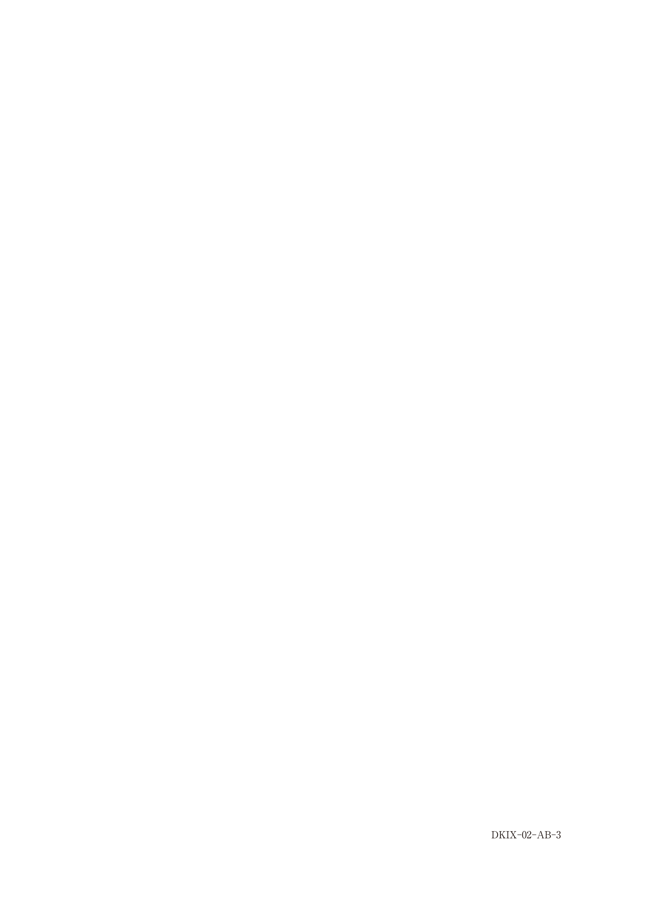

全部床義歯製作において、下顎運動路の記録は顎間関係の決定や咬合器の調節に重要である。
| 装置・方法 | 記録できる内容 |
|---|---|
| ゴシックアーチトレーサー | 水平面での下顎運動路（側方限界運動） |
| パントグラフ | 三次元的な下顎運動路 |
ゴシックアーチ描記法は、定められた咬合高径における下顎の左右の側方限界運動の軌跡を描記させ、その描記図（ゴシックアーチ）をもとに水平的な顎間関係の決定や診断を行う方法。
| 装置 | 用途 |
|---|---|
| 筋電計 | 筋活動の測定（運動路ではない） |
| フェイスボウ | 上顎模型の咬合器装着（運動路記録ではない） |
| パラトグラフィ | 発音時の舌と口蓋の接触パターン |
| ヒンジアキシスロケーター | 蝶番軸（顆頭点）の位置決定 |
ポッセルト図形は、下顎切歯点の矢状面における運動範囲を示す図形である。
最前方位から最後退位への移動は、ポッセルト図形の上縁を後方へ移動する経路となる。
| 評価できる | 評価できない |
|---|---|
| 咀嚼周期 | 咀嚼能率（直接検査法で評価） |
| 開閉口運動速度 | 最大開口位（開口量検査で評価） |
| 運動経路の形態 | 終末蝶番運動路 |
下顎運動路の記録ができるのはどれか。1つ選べ。
【解説】ゴシックアーチトレーサーは水平面での下顎運動路を記録できる。筋電計は筋活動、フェイスボウは上顎位置の転写、パラトグラフィは舌と口蓋の接触、ヒンジアキシスロケーターは蝶番軸の位置決定に用いる。
下顎切歯点部における矢状面運動路の模式図（別冊No.3）を別に示す。下顎頭が最前方位から最後退位まで移動する経路はどれか。1つ選べ。

【解説】ポッセルト図形において、最前方位（オ）から最後退位（エ）への移動は上縁を後方へ移動する経路。最後退位は中心位に相当する。
咀嚼運動経路の検査で評価できるのはどれか。2つ選べ。
【解説】咀嚼運動経路検査では咀嚼周期と開閉口運動速度を評価できる。咀嚼能率は直接検査法（篩分法など）で評価。最大開口位は開口量検査、終末蝶番運動路は別の検査で評価。
咀嚼機能を評価するための間接的検査法はどれか。3つ選べ。
【解説】間接検査法は咬合力測定、下顎運動記録、咬合接触検査。篩分法とグルコース溶出量測定は直接検査法（咀嚼能率を直接評価）。